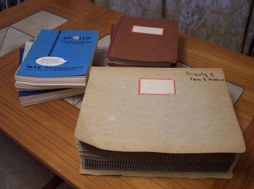
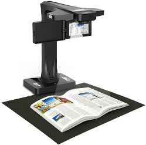
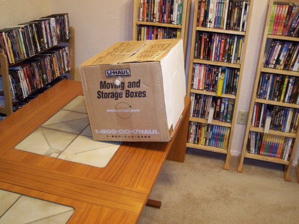

Contents
Introduction
Okay, so let's say that you
have some Apollo Program documents in your possession, or
even—wonder of wonders!—an AGC program listing. You've read
the Virtual Apollo website and seen the plea that you donate
digital images to the project. You're that rarest of
people, who actually look ahead to future generations and think
this would be a valuable thing to do.
But ... how do you do it?
Well, if the document you're working with is small—say, 150 U.S.
letter-sized pages—most of you won't really need much advice from
me. Even the cheapest scanner or digital camera will do the
trick. (It may be slow and painful, but that will just help
to give you a sense of accomplishment!) The advice I'd give
in that case is simply this:
- Check carefully before doing anything that your document
isn't already online somewhere. While I'm an assiduous
collector of this info, I'm not necessarily able to tell you
accurately what's available and what's not. Of course, if
you have a different version
of something that's
already available, or if you can make it more legible or better
in some other way, go ahead and digitize it anyway!
- The document usually will have a binding on it, and you may
be tempted to scan it with the binding in place. You can
certainly do that. However, the document will suffer
excessive wear, the scans will be relatively poor, and it will
be a lot more effort for you. In almost all cases it's
easy to remove the binding before making the copies, and to put
the binding back afterward.
- Don't worry too much about getting the scans into the same
form we use to publish them online ... PDF, JPG, TIFF,
etc. Whatever you send us, we'll preserve the raw images
as-is and turn it into an appropriate format for
publishing.
- Don't worry too much about things like color vs.
black&white, dots per inch, etc. Worry about
legibility. Make sure that in whatever images you create,
the text and diagrams are readable, even if you need to zoom in
when viewing them to do so. If you need to use higher dpi
in pages that are diagrams than you do on text pages, then
please do so.
- Don't worry about foldouts that are too big to fit on your
scanner. Simply scan them in several passes and provide
several JPGs or TIFFs for them, and we'll digitally recombine
them in a complete foldout.
- Do not skip blank pages. We have know way to know
that they're supposed to be blank, and will think that a page
is missing. Always double-check to make sure that every
page is present.
- If you are providing PDF, do not apply optical character
recognition to it (PDF). Let me worry about that
part.
- Simply email me (Ron Burkey <info@sandroid.org>) the
finished PDF or a zipfile of the JPGs or TIFFs ... or send them
as a tarball or a rar archive, or using whatever archiving
method pleases you.
On
the other hand, let's suppose
that you're lucky enough to have a lot of Apollo materials, and you
recognize that the simplistic scheme mentioned above is going to
take forever to
accomplish. In that case, you need to put a little more
thought ... and possibly money ... into the digitization.
If money is the obstacle, contact me and I can probably defray
expenses.
In the photo at right, which you can click to enlarge if you'd
like to admire it, is a stack of documents sent to me by original
AGC developer Fred Martin. The large pale-green document in
front is the AGC program listing of Apollo 8; it's about 1600
pages of 11"×15" fanfold paper. Behind it, the brown
document in two volumes is the Command Module AGC program listing
of Apollo 9; it's about 1700 8"×10.5" double-sided pages,
with an easy-to remove binder. Next to that is a collection
of miscellaneous documents—the top document being a portion of
the Apollo 10 GSOP—perhaps another 1500 pages of 8.5"×11"
double-sized pages, with either easy-to-remove bindings or
staples. That's a stack of documents that you'd be lucky to
have, but which would certainly be far beyond the capabilities
that most people have at their disposal for digitization of
documents or images in any reasonable amount of time and
effort.
In a case like this, I'd usually just recommend letting us do the digitization
for
you, and of course that's exactly what Fred did. But
perhaps you've got more time at your disposal and are keener to
volunteer the time and energy to do the digitizations as a
do-it-yourself project? What then? (By the way, Fred
helped write the software and then preserved it for 40 years, so
that's enough expenditure of time and energy as far as I'm
concerned. Thanks, Fred!) I don't know that I can
really give any definitive advice, but I can show you what I did,
and that may at least serve as a guide to whether you want to do
it or not.
A Note on File Formats ...
If You Care
I've gotten some flack for suggesting in some of my
recommendations below that JPG is a good file format for
preserving the scanned images of these documents. The
complaint is that JPG is a "lossy" storage format, while some
other file formats like PNG or TIFF are "lossless". For a
digital camera, an image in RAW format is even better than PNG or
TIFF, since in addition to being lossless it facilitates certain
types of image post-processing that PNG or TIFF do not.
What that means is that while PNG doesn't degrade the imagery,
JPG does degrade them ... but probably not in any way that is
perceptible. In other words, lossless is GOOD, and lossy is
BAD, but not terribly bad.
The problem is that the lossless PNGs may in some cases be
incredibly larger than JPGs of the same source material. For
example, consider the
AGC program listing of the SOLARIUM program, used on the
unmanned Apollo 4 and Apollo 6 missions. JPGs of the
individual pages of this program listing are around 6 MB each,
while PNGs and TIFFs of the same pages are around 45 MB and 50 MB
each. And while the JPGs are (in a theoretical sense)
certainly degraded, you can display the JPG right next to the PNG
and zoom in to any magnification you care to use, and will never
be able to see that degradation with the naked eye.
On the other hand, if the document you want to scan is very
clearly sharp black print on clean white paper, then there won't
be too much size penalty in using PNG rather than JPG.
Indeed, the PNGs may even be smaller than the JPGs.
So my general recommendation is that if you have the option
of choosing the storage format of your images, and if
PNG images aren't too much bigger than JPG, then by all
means use PNG. Otherwise use JPG. (And if your
equipment produces JPGs, leave them as JPGs; converting a
JPG to PNG after it has been created is of no use at all, since
any data loss will already have occurred at the time the images
were created.)
My Current Scanner
Recommendation
If money is no object, the best current solution is
to use what's known as an "overhead scanner" or "book
scanner". That's a device that allows the document or printout
to lay flat on a desk or table-top, with the built-in camera
pointing straight down at it.
When I say "money is no object", I don't mean that these devices are
necessary terribly expensive — though "expense" is obviously
subjective — but merely that not everyone has one sitting around the
house already. And not everyone feels like spending money to
make scans for somebody else!
At any rate, if you have one of these, or access to one, it's the
best way to go. If, for example, you pay to have the Internet
Archive scan material for you, this is the kind of device they use,
albeit a much fancier and more-expensive one than the kind somebody
like me uses (as seen in the photo at left). Book scanners
have the great advantage of being very fast and simple to use, being
absolutely non-destructive to the material being scanned, and
typically come with software that "flattens" the imagery so that you
don't have to take a lot of pains to squash the material flat.
All of the document digitization I've done in the last couple of
years has been done with a device of this type.
The last Apollo
fanfold program listing I scanned was also done with a book
scanner, though admittedly when scanning a fanfold listing it helps
to augment the setup with a bit of extra do-it-yourself
rigging. For example, I threw together a stand to support the
scanner a little above the top of the desk, so that I could feed the
pages through, onto the black pad, underneath the
scanner. If anyone's interested in the details of that, drop
me a line and I'll write up a more-detailed description, with some
photos.
But as I say, most people are not in the position to use this
recommendation, since they may have a digital camera or a cheap
flatbed scanner sitting around, but don't have a book scanner.
If so, the following sections have my older recommendations on the
subject. There are really two different cases, and they need
to be handled
completely differently. The methods used for one aren't
suitable for the other, or at least not without some
re-imaginings ... which is to say, not without some ideas that
have occurred to me but which I haven't actually tried
myself. The two different cases are:
My Old
Recommendation: Digitizing a Fanfold
Computer Printout
A computer printout of an AGC program
listing will typically be on oversized (11"×15") fanfold
paper. In most cases, it will be on extraordinarily thin,
floppy white paper with black lines, although in some cases the
computer paper has green and orange bands on it. All of
these points make such a listing difficult to deal with.
First, as a theoretical proposition, it might be possible to scan
such a document using a tabloid-sized (11"×17") flatbed scanner,
and very carefully (so as not to tear the pages apart) slide the
pages across the scanner one at a time. If you did so, I
dare say the results would be exceptional, and would be far
better than the method I'm actually going to recommend
using. I have such a scanner myself, but the scanner itself
is so poor and so slow that it would be unthinkable to actually
use it. Aside from price, the problem is speed. So if you were to
purchase such a scanner, you find that it was unusable if it took
(say) 1 minute to scan each page. Most scanner models do
not give you a specification for the scanning speed, and that
usually means slow ... slow ... slow. If you have occasion
to try this approach let me know the details (including the
scanner model) and how well it worked out. At the present
time, not having tried this approach myself, I'd probably
recommend the Epson GT-20000 ($1500) scanner.
But putting talk of scanners aside, the method we have used at Virtual AGC
&
friends is a digital camera. A digital-camera setup was
used for obtaining images of AGC software for Apollo
4, Apollo
8, Apollo
11 CM, Apollo
11 LM, and Apollo
15-17 CM. If you actually look at the images so
achieved, you may not be impressed with the quality.
Indeed, those images are not even the raw images from the
cameras, but were post-processed to make them look better!
But realize that the goal was not be able to make an image that
you could print out that would be indistinguishable from the
original hardcopy. Rather, the goal was to achieve
legible text, with
minimal document wear,
and a reasonable expenditure of
time. And I think a reasonable compromise has been
achieved between those goals. If your goal is to make
something indistinguishable from the original, go back to the
last paragraph and think about scanners again.
One great advantage of the digital camera approach is that the
equipment cost is very cheap, since most people have an
acceptable camera already, or else can purchase one for a very
modest cost. How good a camera is needed? As you'll
discern from the following table, the "features" that most people
would choose a camera for are not necessarily good for
our purposes. The
best camera for the job may well be the one in which you can turn
off the most "features". Fancy optics and what-not?
Forget them, as they'll not help you one bit for the
digitization!
The
Ideal Camera
|
Minimally Acceptable Camera
|
- 5 megapixels or greater
- Tripod-mountable
- AC adapter to run from 120V rather than from
batteries
- Manual mode in which auto-focus can be turned
off
- Means of setting the white-balance as desired
- Means of setting the exposure as desired
- 2-3 exposures per second.
- 16 GB or greater storage—for example, 16 GB SDHC
card—accessible without unmounting the camera from the
tripod
- USB 2.0 interface, accessible without unmounting
the camera from the tripod.
- Remote control
|
- 4 megapixels or greater
- Tripod-mountable
Examples: practically any new camera in the
$100-200 range.
|
Most of the criteria listed for the "ideal camera" are really
productivity features that allow you to attain a better rate of
speed in the photography. The best sustained rate it is
possible to achieve using the method I'll describe is around 8-10
seconds per page, allowing an entire AGC listing to be
photographed in about 5 hours. Any productivity feature
that is lacking makes the process take longer, although there are
tradeoffs between some of the features so that if you have one of
the features you might not need some of the others. The
remaining criteria are for the purpose of maintaining
shot-to-shot consistency, but obviously the importance of that is
debatable.
The cheapest known example of a camera having all of the features
(at least as options) listed above is the Panasonic Lumix DMC-G1,
which presently (8/2009) costs around $800. I have also
used the Panasonic Lumix DMC-FZ5, which is an older, now
obsoleted, less expensive ($350) camera that lacks several of the
productivity features mentioned above. Both were very
acceptable. The better camera produced better results, but
that may be because of improvement in my understanding of white
balance more than any other factor. However, working
without the productivity features made the work go much more
slowly with the older camera, particularly in so far as
extracting the photos from the camera was concerned.
Let's go through the criteria one-by-one to understand whether or
not they'll be important to you:
- 5 megapixels or greater—You may think that the more pixels
the better. Well, yes, that's obviously true. The
higher the resolution you want to use, the happier we'll be to
get them. But the images are presently crunched down to
about 1400×1000 pixels for publication online, so most of the
pixels from even a 4 megapixel image are going to be thrown
away. The advantage of using 5 megapixels as opposed to
(say) 3 megapixels is that you don't have to worry as much
about getting an optimal zoom-in when you're setting up for the
shoot. We'll crop off anything we don't like before we
publish the images anyway, so you might as well leave a little
margin around the page when you take the photographs.
- Tripod-mountable—Self-explanatory, I think.
- AC adapter rather than batteries—You're going to take about
3500 shots for a typical AGC program listing. A typical
camera's batteries may give you 200-500 shots. Obviously
you can recharge batteries and change them periodically.
This requires a lot of extra time, but more importantly it
requires you to remove the camera from the tripod and to lose
any setups such as zooms you've made. The re-setup after
the battery has been replaced takes time, and you won't be able
to do it exactly the same every time, so different blocks of
pages will be inconsistent in size, lighting, angle, etc., with
each other.
- Auto-focus off—Auto-focus takes extra time on every shot,
but it also means that each shot will be different in
appearance, since the focus will be done a little
differently. With a cheap camera, most shots will be
in-focus, but some of them will be out of focus, and you won't
know that until you review the images later. It's better
to set up the focus once and to keep using it that
way.
- White-balance—Setting the white balance allows you to
compensate for the color of the lighting used, such as natural
light vs. incandescent lights. You may think that this
doesn't matter—I know that I
did—but it affects the color of
the page background, and that in turn affects the ability to
post-process it easily, which in turn affects the final
contrast of the posted images. So if the white-balance
isn't compensated properly, the background will be darker than
it needs to be and the text will be lighter than it needs to
be.
- Exposure—Same problem as with auto-focus, except that it
usually expresses itself in an inconsistency in brightness from
page to page. Often the even pages will be at a different
brightness than odd pages.
- 2-3 exposures per second—In the method I'll suggest using,
most of your time is
spent in manually changing from one page to the next.
Taking 2 or 3 shots of each page takes little more time than
taking a single shot, but greatly lowers the odds that you'll
have to go back later (after reviewing the images) and reshoot
any of the pages.
- 16 GB or greater storage—For an AGC listing, the
recommended method will require just over 8 GB if two shots are
made of every page, and just under 16 GB if three shots are
made. If the camera has a great enough capacity to store
the entire shoot, it saves the time of stopping in the middle
of a shoot to download images and/or to re-setup after changing
SD cards.
- USB 2.0—Actually, the 16 GB criterion and the USB 2.0
criterion are really mutually exclusive, in that you don't have
as much need for the one if you have the other. The point
of the USB 2.0 interface is that if you don't have big enough
internal storage in the camera to hold the entire shoot, you
can download whenever the camera fills up without having to
take the camera off of the tripod and do a re-setup
afterward. USB 1.0 is workable, but (for example) takes
about 40 minutes to download from a 2 GB SD card, so it adds
something like 50% to the total photography time just for the
downloads. In contrast, the download time using USB 2.0
is negligible. Similarly, if the SD cards can be removed
without having to remove the camera from the tripod, then USB
might not be needed at all.
- Remote control—This is really just a nice-to-have.
With the method we're going to recommend it's not really
needed, it's very nice to have. It allows you to work
without touching the camera, which means that a much
lighter-weight tripod can be used (good for the pocket-book and
very good if you have to carry it around) and that you don't
have to worry so much about bumping the camera as you move
around.
Now, what will you need in order take the pictures?
- The camera, of course.
- A tripod—by which I mean a regular tripod, not a table
tripod. A heavier, sturdier tripod is better, but on my
last shoot I used a sleazy tripod that Circuit City gave me for
free with my camcorder. And if you have a remote control,
the quality of the tripod doesn't matter at all.
- A table.
- 2-3 60W lamps ... maybe. Depending on the ambient
lighting and how well you are able to configure you camera, you
may not even want to use any extra lighting at all.
- A few pages of white paper.
- Some scotch tape.
- Some books.
- A moving box.
What? Some books? A moving box? You'll
understand in a moment.
First, let me show you the setup I actually use, which will be a
little different than yours (no moving box!), because a friend
has been kind enough to create a special-purpose copy-stand for
me. What you see in the photos below, which you can click
to enlarge if you like, is a table with my laptop computer and
the white custom-built copy-stand I mentioned on it.
Perhaps 6 feet in front of the table—the exact distance isn't
critical—is a tripod with the camera on top of it and two lamps
clipped to the sides of it. Because it happens to be a very
light-weight tripod, and it is atop carpeting, some books have
been placed underneath the legs of the tripod to hopfully reduce
settling and vibration. The various cables you see are the
power cords of the computer, the camera, and the lights, and the
USB cable (going through several extensions) from the camera to
the laptop computer. The fanfold printout, for what it's
worth, is the Apollo 8 AGC program listing. At the
beginning of the photo shoot, it was completely on the floor, but
at this point I've already advanced one page at a time through
perhaps 1200 pages, and the pages that have already been
photographed are stacked up behind the page being
photographed.
There are a few of important points to note that may not be clear
from the photographs:
- The binder holding the program listing had to be removed
for this process to work. It was put back on
afterward. The program listing suffers no damage whatever
from either the binder removal or from the photography if
you're careful.
- The lamps clamped to the camera tripod are simply normal
lamps—not special photographic equipment—that just happen to
have clamps rather than supporting bases. I rely on
ambient lighting along with these lamps. The lamps cost
me $10 apiece at Target. Floor-standing lamps would work
also, but note that we're trying to get the lighting as even as
possible across the page being photographed, and the more
oblique the light the less even it will be. Also, as
you'll see in a moment, you may have to be careful with
floor-standing models to keep from knocking them over. I
happen to be using 60W-equivalent compact flourescent bulbs
rather than actual 60W incandescent bulbs, simply because it's
not as hot that way. As I mentioned above, you may not
even want the extra lighting at all, and in my most-recent
shoot (Colossus
237) I did not use them. Don't be fooled into thinking that
because the page background is gray rather than white you need
more lights!
- The copy-stand is at a slight angle from vertical, and the
camera is actually angled downward a little to be at
right-angles to the copy-stand. This angling
unfortunately limits the distance between the copy-stand and
the camera—in other words, you can't get the camera very far
away—but it has the important purpose of helping the printout
to lay flat against the copy stand. If the copy-stand
were vertical, the paper would have a tendency to waft around
in every little breeze, not only causing the pages to be in
motion, but also for there to be a shadow-casting gap between
the paper and the copy-stand.
- The perforated edge between printout pages is placed
exactly at the top of the copy-stand, which is something that
can be done very quickly and accurately when advancing the
paper.
- There is a small mark drawn on the copy-stand to show where
the edge of the paper is supposed to go, and it's very easy to
align the paper with this mark.
- But
most important of all, to take a picture you have to
press the camera button downward,
which is the direction
in which the tripod support provides the greatest stability, so
there is very little camera motion when you press the
button. That means that while a remote control would be
nice, it is not needed.
When people talk
about using a digital camera to photograph documents, they
normally think of the document as laying flat on a table and
the camera looking down from above. This has many
disadvantages compared to the scheme I'm advocating, but the
principal disadvantage is that the camera would be at right
angles to the tripod, which is a very unstable setup, prone to
a lot of camera movement, when the camera button is
pressed. If you have a remote control for the camera,
this factor isn't important at all, but the vertical
arrangement of the paper still allows easier paper movement
than a horizontal arrangement.
Even though I don't appear in the pictures at all, the
technique is very simple: I step forward and move the paper
up by one page, aligning it properly, then I step back out of the
light and press the camera button. Then repeat. I
suggest taking 2-3 pictures for each page, since it takes 6-7
seconds to advance the paper and only a second to take the
picture, so (timewise) extra pictures are essentially free.
I'd also suggest doing a test run of 50 pages or so to make sure
you're doing it right before photographing 1700 pages!
For the camera setup:
- If you have a choice of file formats (TIFF, JPG, etc.), I'd
recommend using JPG.
- If you have a choice of image quality, choose whatever
format gives you JPG images that are roughly in the range of
1.5-2.5 megabytes. This doesn't have to be very
exact.
- If you have a choice of turning auto-focus OFF, do
so. Focus the camera once, at the beginning of the shoot,
an let it focussed the same way throughout.
- If you have a choice of white-balance and exposure,
experiment a little until you get some test shots that look
good to you.
- Turn off the flash.
- ... and if you know anything about photography—I sure
don't!—you'll undoubtedly figure out some other
improvements. Just remember, though, if you spend 20
hours experimenting for a 5-hour shoot, and you don't have more
of the same kind of thing to photograph in the future, you may
be overthinking it!
Now of course, you probably don't have a custom-built copy
stand. The custom-built copy-stand is great for me because
it folds up and is light-weight, and I usually have to travel to
take these photos, but you can get results of just as high
quality without it. What you do is to take a sturdy
cardboard box, and place it where the copy-stand would have been,
at the edge of the table. Put a book under the front edge
of the box to tilt it a little. Fill the box
with books or other weights so that it won't move around.
Tape some white paper at the front to make the front surface of
the box white. Make a mark on the white paper to show where
the edge of the printout is supposed to go. Voila!
Instant, cheap copy-stand! I have taken hundreds of photos
using this exact moving box :), and believe me that the quality
of the photos is identical to what they are with the fancy
copy-stand.

When you're all done photographing—or before, if you're insecure
:)—pull the photos from the camera into your computer, and step
through them to see that you have at least one legible picture
from every page, then send them to me.
My Old
Recommendation: Digitizing a Normal
Document
A "normal" document that is just a stack of pages in
a binder requires a very different technique than a fanfold
document such as a program listing, and depending on the
equipment at your disposal may be very much faster to digitize or
very much slower. Several digitizing methods are discussed
below. Understand that no matter what method you use to
digitize the document, you are going to be better off removing
its binder and restoring it afterward than trying to digitize
with the binder in place. In the three sub-sections below,
you should be able to determine relatively quickly if you can use
that method or not, therefore quickly move to the next section if
need be.
The
Convenient Way
The most convenient way to digitize a normal
document, if you have the equipment at your disposal to do so, is
to use a scanner with an automatic document feeder (ADF).
It's also the priciest method if you have to purchase the
equipment yourself, but many workplaces have suitable equipment
available if they will allow you to use it. If the
documents you are digitizing don't belong to you, you may not be
allowed to use a
document feeder. For example, the National Archives was
fine with me wanting to scan documents on a flatbed scanner, but
had rules against automatic document feeders. At any rate,
if you don't have access to such a scanner, or wouldn't be
allowed to use it, advance to the next section.
I do enough document scans that I actually thought it was worth
my while to purchase a fairly high-end scanner, an Epson
WorkForce Pro GT-S80. This gadget has a 75-page feeder, can
pull through 40 pages per minute, and can scan both sides of the
page at once (so that it effectively scans 80 pages per
minute). It's not cheap. On the other hand, I also
have an HP R60 multi-function device (printer/scanner/fax) with a
25-page feeder, that can probably pull and scan 1-2 pages per
minute. It wasn't cheap, either. So there's a very
wide range of performance, and none of it is cheap. But of
course, if there's a document feeder the digitization process can
run unattended and it doesn't really use up any of your time,
regardless of the speed.
Most scanners do not specify a scanning speed, and with good
reason ... they're very, very slow. The reason for this is
that scanners for personal use are basically optimized for
scanning a small number of photographs at very high quality, as
opposed to a very high volume of documents at fairly low
quality. Scanners which are optimized for the latter are
identified by the buzzword "document scanner" as opposed simply
to "scanner". Document scanners are optimized for 200 dpi
black&white scanning, and the speed specification relates to
a 200 dpi b&w configuration. That's the setting I
typically use myself, except in rare cases of very small
print.
Other than the price, the only real drawback of the scanner with
ADF is that there is a very small chance of a paper jam that
could conceivably damage your document. (That was the
reason for the National Archives' rule against ADF.) Having
scanned many thousands of pages using ADFs, I don't believe
that's something to worry about, but it's something you might
want to test out by scanning dummy documents before scanning real
documents. A lesser drawback with a very fast machine (such
as my scanner) is that it scans the pages so fast that there can
be a pretty big variation in the alignment of the pages.
:)
The Safest
Way
If a scanner with ADF can't be used, a flatbed scanner
may be the next-best option. I call it the "safest way",
but I don't really believe it's any safer than ADF since humans
are no more perfect at handling paper than machines are.
The principal difficulty with a flatbed scanner is, as described
in some detail in the prior section, that they are typically
very, very slow. For example, scanning a single page might
take 45 seconds. Without an ADF, that 45 seconds, times
however many pages there are, comes right out of your lifespan
and probably won't be replaced, karma notwithstanding.
The irony is that old scanners which provided a mere 150-600 dpi
rather than the modern photographic thousands of dpi were often
much faster. With my old HP ScanJet 2C that's over ten
years old, I can sustain a throughput of about 10 seconds per
scan at 200 dpi b&w. I used this method for scanning
many thousands of pages at the National Archives.
At any rate, you can figure it out for yourself whether the
flatbed will work for you. Scan a few pages, time it,
extrapolate to see how long it will take to do the entire job,
and then decide if that fits into a reasonable budget.
A
Re-Imagining
One thing I haven't tried,
but which may be
worth considering is to use a variation of the digital camera
methodology described earlier for fanfold printouts. If
the same method was used, except that a lip or clip or magnets or
some other trick was added to added to allow the copy-stand to
hold a single page at a time, you could probably digitize
documents at a rate of about 10 seconds per page. But as I
say, it has never been tried, that I know of.
Getting the
Digitized
Documents To Us
The size, in bytes, of document scans or
photographs is typically quite large. If you can package
your scans in small chunks—say, 10-20 megabyte zipfiles—you may
be able to email them to me one at a time.
Another very good option is to use an online storage space such as Google Drive or Dropbox to store the images,
and then just send me a link to them.
You can also physically mail me DVDs or USB keys with
the data on them. Inquire by email for a physical shipping
address. Make sure you have backups of any data you send,
in case the ones being shipped are lost in transit! I'd
prefer not returning the DVDs or USB keys to you. If you
need shipping expenses or the cost of DVD-R or USB keys to be
defrayed, let me know the total amount and the method by which
you'd like the money sent to you.
Getting Us To Do It For
You
There are two basic possibilities for getting me to
do the digitizing for you, as follows:
- If you ship documents or
AGC program listings to me, I will digitize any that aren't
already online, and then return the originals to you—or to a
museum, if you would prefer. Inquire by email about a
physical shipping address. I can defray the shipping
cost, if requested.
- I can come to your location to perform the
digitization. However, I am only willing to do this if
the benefit is very great, and if you are willing for me to use
the digitization methods I've outlined on this web-page.
As far as I know, the only cases in which I would consider the
benefit very
great are: you have previously-unavailable program
listings for AGC, AGS, or LVDC; or, you have a large quantity (thousands
of
pages) of previously unavailable documents. This is not
to say that I think small documents aren't valuable, just that
my time, safety, and convenience have value as well.
Besides, if I came to your location it would have to be
something that was scheduled months in advance.
As far as the notion of donating to a museum is concerned, if
you were interested I'm presently recommending the Research
Library of the Wings Over the Rockies Air & Space Museum
in Denver. In general a research library is probably
preferable to a museum as such, since documents have very
little sex appeal when considered as display items, but may
be profitably viewed for research if properly
supervised. The Virtual AGC project has no affiliation
with the museum, but has received very significant help from
the Research Library in the past, and that is the basis for
my recommendation. Obviously, there are many other fine
institutions which deserve consideration as well, if you have
some personal preferences in that regard.
Sadly, an important point to consider about shipping
documents, is that there is a non-zero probability that they
will be lost in transit, even if they are shipped by the
safest feasible means. The most popular methods of
shipping in the U.S.—namely FedEx, UPS, and the USPS—do not
publish their shipping-loss rates. If you google this
question, you'll find any number of meaningless personal
rants about lost packages, demonstrating that one or more of
these shippers are terrible. However, somebody got the
bright idea of looking at the insurance rates being charged,
and estimating the loss rates from the insurance
charges. On this basis, one can conclude that FedEx and
UPS are roughly equivalent to each other, and that either of
them is perhaps twice as good as the USPS. Alarmingly,
though, the package-loss rate would appear to be on the order
of 1%. By "on the order of", I don't mean exactly 1%;
perhaps it is 2% or 0.5%. But it is probably less than
10% and greater than 0.1%. (Figure it out for
yourself: FedEx and UPS charge something like $0.32 per
each $100 of insurance. So they must expect something
like a 0.3% loss.)
Now, when you're shipping a commercial item the loss rate
doesn't really matter, because if you insured the object
properly then in the worst case all you have to do is to
order another one. But when you're shipping a
one-of-a-kind object, you can't just order up a new
one. No amount of insurance can compensate for the
loss. So that's something you'll want to consider if
you decide to ship your documents to me.
And speaking of insurance, how much is reasonable?
Well, recent activity on eBay suggests that a typical Apollo
Program document may be worth about $300, so that's the
number I'll arbitrarily use when shipping items back to you
unless instructed otherwise.
This page is available under the Creative
Commons
No Rights Reserved License
Last modified by Ronald Burkey on
2021-01-15.

{kind=link}
{kind=link}
{kind=link}